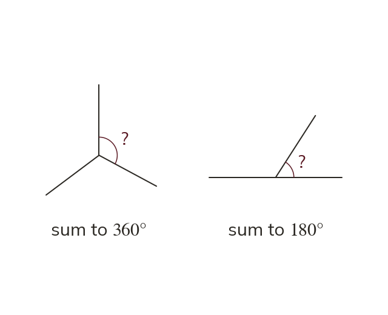

Point and line
Angles around a point sum to Angles on a straight line sum to Subtract the known angles from the total to find the missing one.
Angles around a point sum to Angles on a straight line sum to Both are angles that fit together to complete a shape - a full turn or a straight line - so subtracting the ones you know from the total gives the missing one.